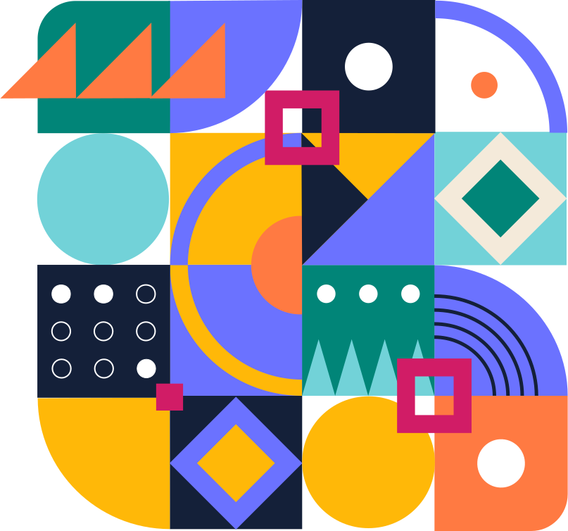

<div class="flex flex-col gap-6 p-6">
  <div
    class="md:min-h-[calc(100svh-6rem)] min-h-[calc(100svh-8.5rem)] h-full flex lg:gap-10 justify-between lg:mx-20 items-center"
  >
    <div
      class="lg:max-w-md w-full flex flex-col gap-6 lg:items-start lg:text-left items-center text-center"
    >
      <h1 class="text-5xl font-bold text-black">
        Paint Your <span class="text-[#018578]">Digital</span> Landscape.
      </h1>
      <h2 class="text-xl text-[#5d5d5d]">
        Modern tool to create and test color palettes for your website.
      </h2>
      <div class="flex md:flex-row flex-col gap-3">
        <button
          class="bg-[#018578] text-white font-medium px-5 py-2 w-auto rounded-[10px]"
          routerLink="/palette"
        >
          Find Perfect Colors!
        </button>
        <button
          class="text-[#018578] border-2 border-[#018578] font-medium px-5 py-2 w-auto rounded-[10px]"
          (click)="scrollDown()"
        >
          See how it works
        </button>
      </div>
    </div>
    <div>
      
    </div>
  </div>
  <div class="grid md:grid-cols-3 grid-cols-1 gap-6 scroll-point">
    <div class="infoContainer" routerLink="/canvas">
      
      <span class="text-2xl font-bold">Test on real UI</span>
      <span class="text-[#5d5d5d]"
        >See how your palette looks on the most common web UI elements</span
      >
    </div>
    <div
      class="infoContainer"
      routerLink="/canvas"
      (click)="filterService.isMenuForcedToOpen = true"
    >
      
      <span class="text-2xl font-bold">Simulate color blindness</span>
      <span class="text-[#5d5d5d]"
        >Check how your design will be seen by people with different types of
        color blindness</span
      >
    </div>
    <div class="infoContainer" routerLink="/contrast">
      
      <span class="text-2xl font-bold">Check contrast</span>
      <span class="text-[#5d5d5d]"
        >Calculate the contrast ratio and check if your text will be readable by
        everyone</span
      >
    </div>
  </div>
</div>
